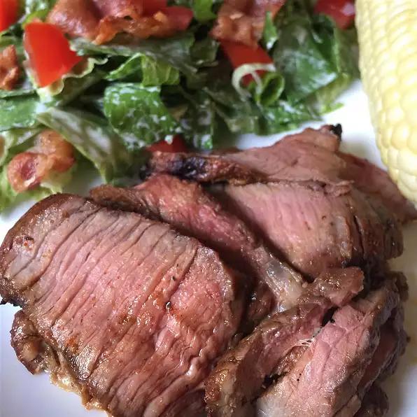

T-bone

Description:
Fine and delicious recipe for t-bone steak:
Ingredients:
- 4 teaspoons salt, or to taste
- 2 teaspoons paprika
- 1 teaspoon ground black pepper
- 1 teaspoon onion powder
- 1 teaspoon garlic powder, or to taste
- 1 teaspoon cayenne pepper, or to taste
- 1 teaspoon ground coriander, or to taste
- 1 teaspoon ground turmeric, or to taste
- 4 t-bone steaks, at room temperature
Steps:
-
Preheat an outdoor grill for high heat, and lightly oil the grate. Stir the
salt, paprika, black pepper, onion powder, garlic powder, cayenne pepper,
coriander, and turmeric together in a small bowl; set aside.
-
Rub the steaks on all sides with the seasoning mixture. Cook on the
preheated grill to your desired degree of doneness, 3 to 3 1/2 minutes per
side for medium-rare. An instant-read thermometer inserted into the center
should read 130 degrees F (54 degrees C).